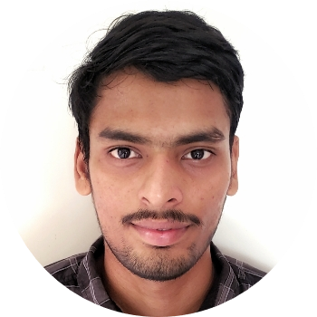
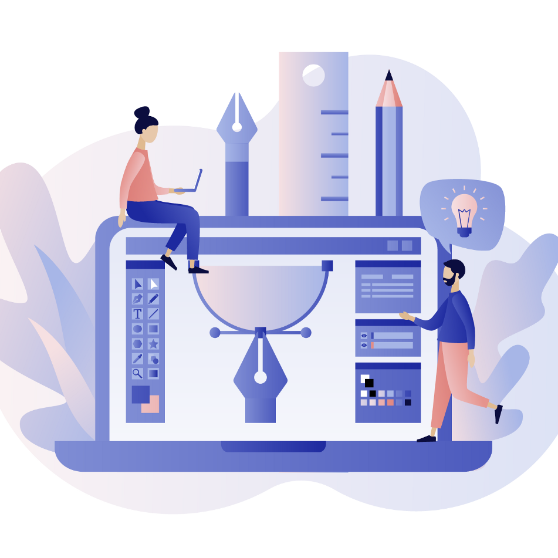

Hello.
I am a .NET and web developer. I am working at Accenture Solutions as Associate Software Engineer.I love coding and drawing illustrations.
My Skills.

Design and Development
I started learning to code when I was 16 because I wanted to create beautiful websites. Over the time, I have gained a wealth of experience designing and developing web applications using ASP.NET.

Illustration
I used to draw pictures of nature when I was a child. That interest pulled me towards digital painting and it became my hobby. I make vector illustrations and logo designing using abobe illustrator.
Get In Touch
Want to build your own website?
Feel free to write us for any queries or suggestions. Feedback is welcome.
CONTACT ME